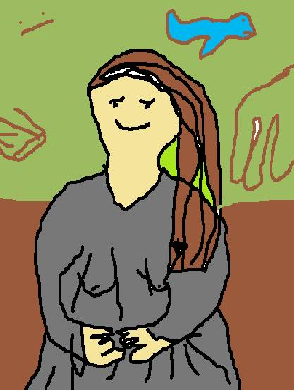

Ülesanne 4
Kõik teevad reposse selle lehe muutmiseks OMA ERALDI BRANCHI
Master branchi (kus see leht hetkel asub) MUUTA EI TOHI
Iga inimene teeb oma branchis, oma ülesanne 4 lehele, koduselt, lehekülje, mis kirjeldab
ära vastava inimese lemmikkunstniku. Olgu ta siis klassikaline kunstnik või online insta artist vms.
Kunstniku kohta tahaks teada
- Kes ta on
- Kuidas ta kunstini jõudis
- Kaua ta kunstnik olnud on
- Mis stiile kunstnik valdab/teeb
- Näiteid töödest mis teile kunstniku portfoliost meeldib
- Teiepoolne ülevaade kunstniku loomingust üldiselt
- MSpaintis teie joonistatud pilt mis üritab matkida kunstnikule omapärast stiili
Minu valitud kunstnik on Leonardo da Vinci.
Leonardo oli ja on peamiselt tuntud maalikunstnikuna.
Isa õpetas ta Firenzes tuntud Andrea del Verrochio töökojas joonistama, sealt tekkis huvi kunsti vastu.
Ta tegeles kunstiga aastate 1470–1519 vahel.
Renessanss, High Renaissance, Italian Renaissance


Siin on minu Kunst:
